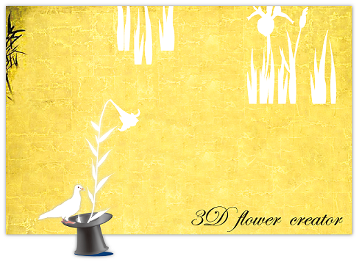

3D Flower Creator

説明:
3D Flower Creatorは、Computer Graphicsの研究目的に作られた、植物の三次元モデリングソフトです。
ストロークジェスチャによる花弁形状の初期生成・変形や、軸を描くことで植物オブジェクト(茎・葉・花・植物全体)のコピーなどが行えます。
本ソフトウエアは、研究目的のプロトタイプであり、現在は趣味の範囲で開発を続けています。
3D Flower Creatorは、研究目的のプロトタイプであり、試用する上でのサポートは提供できかねますのでご了承ください。
また、このソフトウエアを利用して生じたいかなる損害も、開発者は責任を負いかねます。
Updates:
To do:
- ManualとVideoの整備
- Undo/Redo 機能
- より複雑な花弁形状に対応
- Compositオブジェクト作成時の消しゴムツールの不備のfix
- Refactoring + sorce code 公開